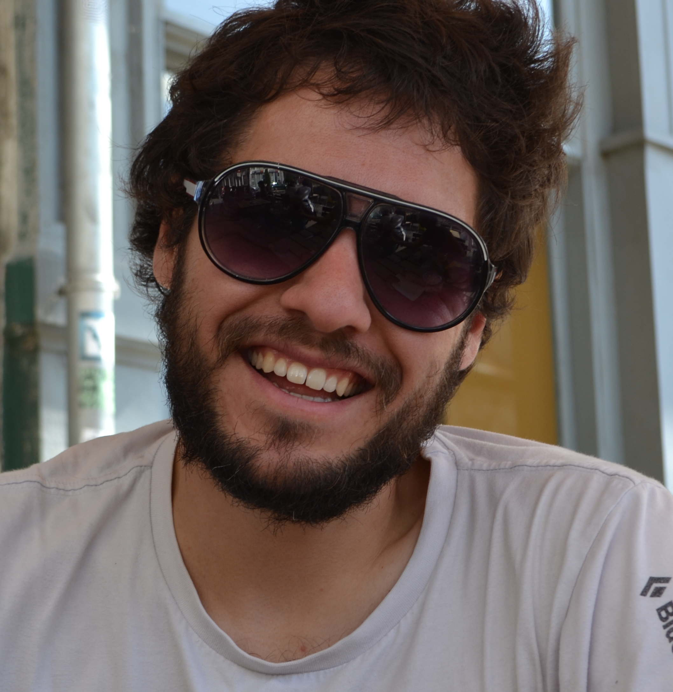

|  | Frédéric CyrPostdoctoral researcher
|
MIO - Institut Méditerranéen d'Océanologie, Campus de Luminy - Case 901, 13288 MARSEILLE cedex 9, France. +33 (0)4 86 09 05 27 Frederic.Cyr @ mio.osupytheas.fr |
| Home | CV | Publications | Research |
|
I am a physical oceanographer dealing with questions related to turbulence and mixing in coastal waters (Gulf of St. Lawrence, Baltic Sea, Mediterranean Sea) and in the deep ocean (e.g., Rockall Bank - North Atlantic).
I generally work with observations (vertical microstructure profilers, moorings, remote sensing, etc.), although I also like idealistic process-related models.
I am particularly interested in mixing mechanisms caused by topographic features, such as hydraulic control and internal waves generation/breaking.
Although the study of turbulence generally implies quite fundamental ocean physics, I am always trying to apply my findings to the other disciplines of oceanography.
Past examples of this include estimation of turbulent biochemical fluxes, oil spills scenarios and the link between mixing and biological habitats.
With this multidisciplinary idea in mind, I am now working in the Environmental Chemistry team of the MIO, working with gliders and dealing with the optical properties of the dissolved organic matter and the physical processes affecting its behavior in the NW Mediterranean. Please have a look through these pages to learn more about my work. |
Follow me on Twitter! Follow @cyrf0006
These webpages are licensed under a Creative Commons Attribution-Noncommercial-Share Alike 3.0 License.